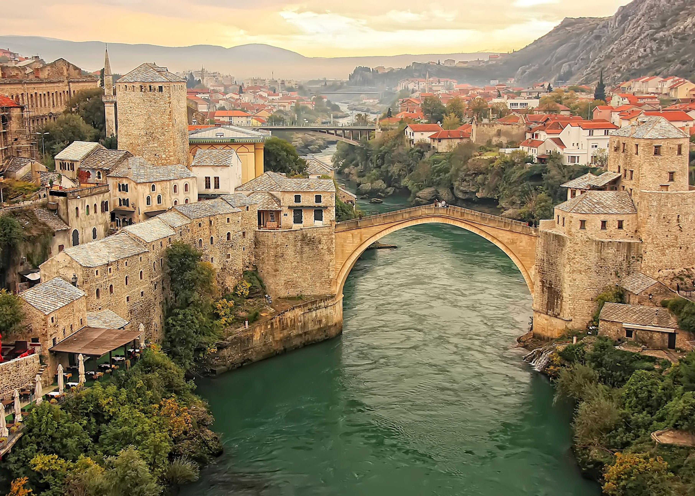
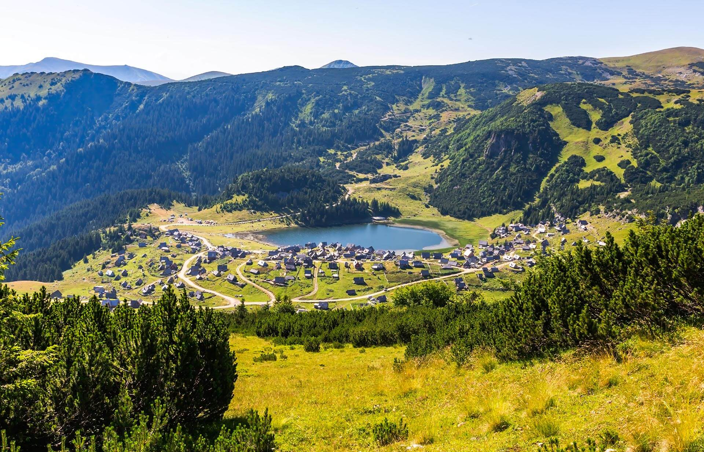
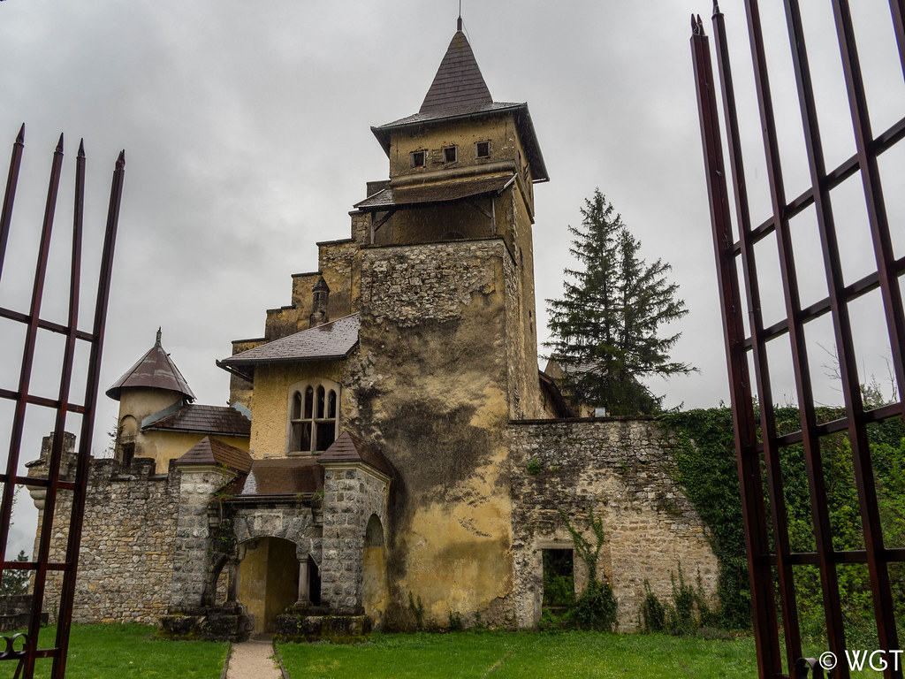
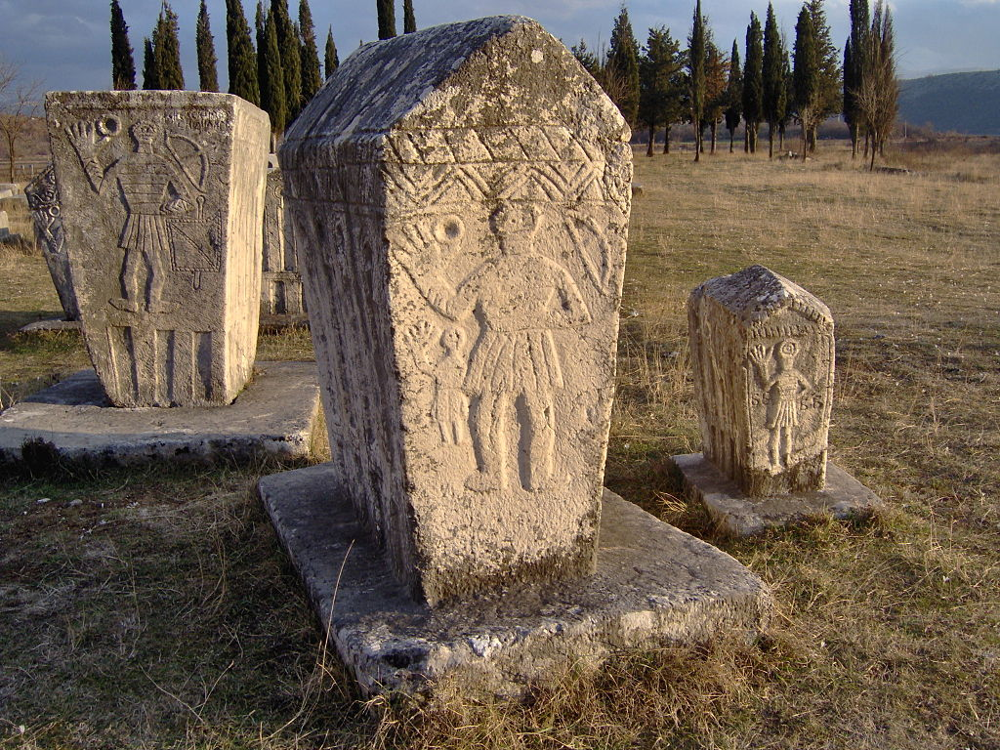

Second gallery
Some of the natural wealth in Bosnia and Herzegovina
Strbački buk is a 24-meter-high waterfall on the river Una at an altitude of 294 meters. It is located on the border between Croatia and Bosnia and Herzegovina. It is part of the Una National Park. Along with the Martinbrod waterfalls, it is one of the most beautiful on the Una river.
Sutjeska National Park is the oldest national park in Bosnia and Herzegovina. Here is also the last rainforest in Europe - Perućica. Sutjeska is also home to the highest mountain peak in Bosnia and Herzegovina, Maglić at 2,386 m.
Kravica is a waterfall in Bosnia and Herzegovina, located 10 km from Međugorje, in Studenci near Ljubuški It is located on the Trebižat River and has a width of 120 meters and a height of about 28 meters. In the past, many mills and stupas for rolling the past many mills and stupas for rolling cloth were active by the waterfall.
The Old Bridge in Mostar over the Neretva River is a UNESCO World Heritage Site which, when it was built, was the largest arch structure in the world.
Lake Prokoško is located on the mountain Vranica, Bosnia and Herzegovina and is of glacial origin.
Tekija in Blagaj is located at the source of the Buna river, not far from the center of Blagaj near Mostar.

Tvrđava OstrožacThe fortress dates back to the 16th century, when the Ottomans founded the Ottoman province of Bosnia.
Stećak is a type of stone medieval tombstone.
